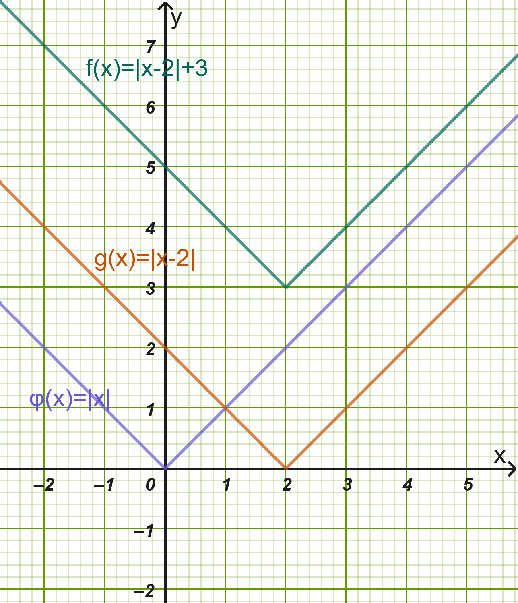
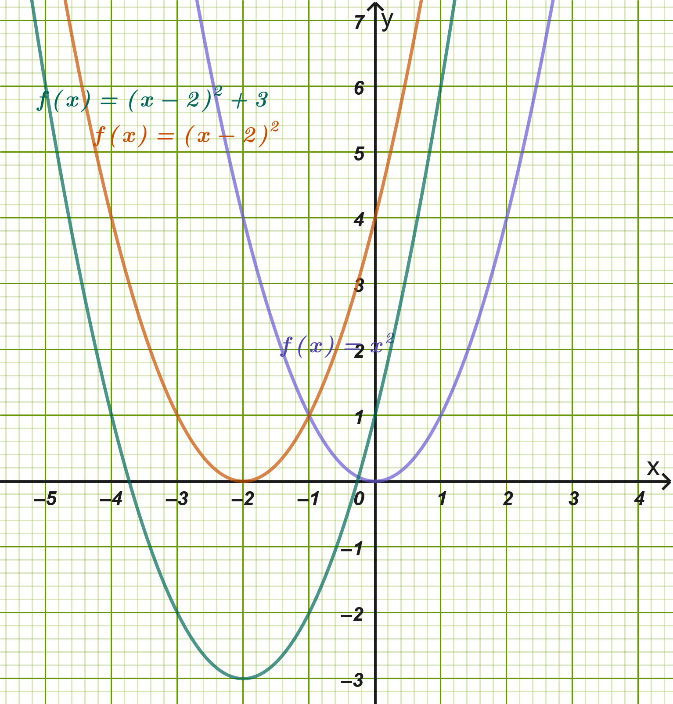
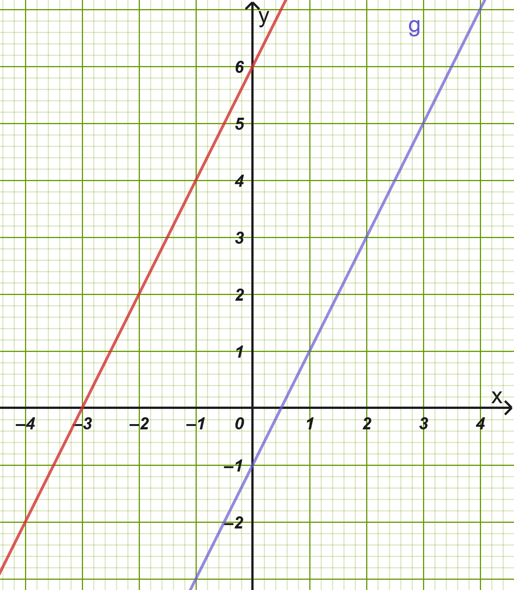

1 Κατακόρυφη - Οριζόντια Μετατόπιση Καμπύλης
1.1 Κατακόρυφη Μετατόπιση Καμπύλης
1.1.1 Ορισμοί
Ορισμοί
Μετατόπιση προς τα πάνω: Η γραφική παράσταση της συνάρτησης \(f\) με \(f(x) = \phi(x) + c\), όπου \(c > 0\), προκύπτει από μια κατακόρυφη μετατόπιση της γραφικής παράστασης της \(\phi\) κατά \(c\) μονάδες προς τα πάνω. Αυτό συμβαίνει διότι για κάθε \(x \in A\), η τιμή \(f(x)\) είναι κατά \(c\) μονάδες μεγαλύτερη από την τιμή \(\phi(x)\).
Μετατόπιση προς τα κάτω: Η γραφική παράσταση της συνάρτησης \(f\) με \(f(x) = \phi(x) - c\), όπου \(c > 0\), προκύπτει από μια κατακόρυφη μετατόπιση της γραφικής παράστασης της \(\phi\) κατά \(c\) μονάδες προς τα κάτω. Αυτό συμβαίνει διότι για κάθε \(x \in A\), η τιμή \(f(x)\) είναι κατά \(c\) μονάδες μικρότερη από την τιμή \(\phi(x)\).
1.1.2 Παραδείγματα Διαφόρων Περιπτώσεων
Παράδειγμα 1 (Προς τα πάνω - Απόλυτη Τιμή):
Η συνάρτηση \(f(x) = |x| + 2\) προκύπτει από τη μετατόπιση της καμπύλης της \(\phi(x) = |x|\) κατά \(2\) μονάδες κατακόρυφα προς τα πάνω. Η κορυφή της μετατοπίζεται από το \((0,0)\) στο σημείο \((0,2)\).
Παράδειγμα 2 (Προς τα κάτω - Παραβολή):
Η συνάρτηση \(g(x) = x^2 - 3\) προκύπτει από τη μετατόπιση της παραβολής \(y = x^2\) κατά \(3\) μονάδες κατακόρυφα προς τα κάτω. Η κορυφή της βρίσκεται στο σημείο \((0,-3)\).
Παράδειγμα 3 (Προς τα πάνω - Υπερβολή):
Η συνάρτηση \(h(x) = \dfrac{2}{x} + 1\) προκύπτει από την κατακόρυφη μετατόπιση της καμπύλης \(y = \dfrac{2}{x}\) κατά \(1\) μονάδα προς τα πάνω. Το πεδίο τιμών της γίνεται \(\mathbb{R} - \{ 1 \}\).
Παράδειγμα 4 (Προς τα κάτω - Παραβολή):
Η συνάρτηση \(k(x) = 0,5x^2 - 4\) προκύπτει από την κατακόρυφη μετατόπιση της καμπύλης \(y = 0,5x^2\) κατά \(4\) μονάδες προς τα κάτω.
1.2 Οριζόντια Μετατόπιση Καμπύλης
1.2.1 Ορισμοί
Ορισμοί
Μετατόπιση προς τα δεξιά: Η γραφική παράσταση της συνάρτησης \(f\) με \(f(x) = \phi(x - c)\), όπου \(c > 0\), προκύπτει από μια οριζόντια μετατόπιση της γραφικής παράστασης της \(\phi\) κατά \(c\) μονάδες προς τα δεξιά. Αυτό συμβαίνει διότι η τιμή της \(f\) στη θέση \(x\) είναι ίδια με την τιμή της \(\phi\) στη θέση \(x - c\), η οποία βρίσκεται \(c\) μονάδες αριστερότερα.
Μετατόπιση προς τα αριστερά: Η γραφική παράσταση της συνάρτησης \(f\) με \(f(x) = \phi(x + c)\), όπου \(c > 0\), προκύπτει από μια οριζόντια μετατόπιση της γραφικής παράστασης της \(\phi\) κατά \(c\) μονάδες προς τα αριστερά. Αυτό συμβαίνει διότι η τιμή της \(f\) στη θέση \(x\) είναι ίδια με την τιμή της \(\phi\) στη θέση \(x + c\), η οποία βρίσκεται \(c\) μονάδες δεξιότερα.
1.2.2 Παραδείγματα Διαφόρων Περιπτώσεων
Παράδειγμα 1 (Προς τα δεξιά - Απόλυτη Τιμή):
Η συνάρτηση \(f(x) = |x - 1|\) προκύπτει από την οριζόντια μετατόπιση της \(\phi(x) = |x|\) κατά \(1\) μονάδα προς τα δεξιά. Η κορυφή βρίσκεται στο σημείο \((1,0)\).
Παράδειγμα 2 (Προς τα αριστερά - Παραβολή): Η συνάρτηση \(g(x) = (x + 3)^2\) προκύπτει από την οριζόντια μετατόπιση της παραβολής \(y = x^2\) κατά \(3\) μονάδες προς τα αριστερά. Η κορυφή μετατοπίζεται στο σημείο \((-3,0)\).
Παράδειγμα 3 (Προς τα δεξιά - Πολυωνυμική): Η συνάρτηση \(h(x) = (x - 2)^3\) προκύπτει από την οριζόντια μετατόπιση της \(y = x^3\) κατά \(2\) μονάδες προς τα δεξιά. Η γραφική παράσταση τέμνει τώρα τον άξονα \(y'y\) (\(x = 0\)) στο σημείο \(y = -8\).
Παράδειγμα 4 (Προς τα αριστερά - με Απόλυτα): Η συνάρτηση \(k(x) = |x+2|^3\) προκύπτει από την οριζόντια μετατόπιση της \(y = |x^3|\) κατά \(2\) μονάδες προς τα αριστερά.
1.3 Εφαρμογές
Εφαρμογή 1: \(f(x) = |x - 2| + 3\)
Για να παραστήσουμε γραφικά τη συνάρτηση \(f(x) = |x - 2| + 3\), αξιοποιούμε διαδοχικά την οριζόντια και την κατακόρυφη μετατόπιση ξεκινώντας από τη βασική συνάρτηση \(\phi(x) = |x|\):
Λύση

1ο Βήμα (Οριζόντια μετατόπιση): Σχεδιάζουμε τη συνάρτηση \(g(x) = |x - 2|\), η οποία προκύπτει από οριζόντια μετατόπιση της γραφικής παράστασης της \(\phi(x) = |x|\) κατά \(2\) μονάδες προς τα δεξιά. Η κορυφή της βρίσκεται στο σημείο \((2,0)\).
2ο Βήμα (Κατακόρυφη μετατόπιση): Μετατοπίζουμε τη γραφική παράσταση της \(g(x) = |x - 2|\) κατά \(3\) μονάδες κατακόρυφα προς τα πάνω, λαμβάνοντας τη \(f(x) = |x - 2| + 3\).
Χαρακτηριστικά της \(f(x)\):
Κορυφή/Σημείο καμπής: Το σημείο \((2,3)\).
Πεδίο Ορισμού: \(A = \mathbb{R}\).
Σύνολο Τιμών: \(f(A) = [3, +\infty)\), αφού \(|x - 2| \ge 0 \implies |x - 2| + 3 \ge 3\).
Ακρότατο: Παρουσιάζει ολικό ελάχιστο στη θέση \(x_0 = 2\) με τιμή \(f(2) = 3\).
Εφαρμογή 2: \(f(x) = (x + 2)^2 - 3\)
Για τη συνάρτηση \(f(x) = (x + 2)^2 - 3\), εργαζόμαστε με βάση την αρχική παραβολή \(\phi(x) = x^2\):
Λύση

1ο Βήμα (Οριζόντια μετατόπιση): Σχεδιάζουμε τη συνάρτηση \(g(x) = (x + 2)^2\), η οποία προκύπτει από οριζόντια μετατόπιση της \(y = x^2\) κατά \(2\) μονάδες προς τα αριστερά. Η κορυφή της παραβολής μεταφέρεται στο σημείο \((-2,0)\).
2ο Βήμα (Κατακόρυφη μετατόπιση): Μετατοπίζουμε τη γραφική παράσταση της \(g(x) = (x + 2)^2\) κατά \(3\) μονάδες κατακόρυφα προς τα κάτω, σχηματίζοντας τη \(f(x) = (x + 2)^2 - 3\).
Χαρακτηριστικά της \(f(x)\):
Κορυφή Παραβολής: \(K(-2, -3)\).
Άξονας Συμμετρίας: Η κατακόρυφη ευθεία \(x = -2\).
Μονοτονία: Η \(f\) είναι γνησίως φθίνουσα στο \((-\infty, -2]\) και γνησίως αύξουσα στο \([-2, +\infty)\).
Ακρότατο: Παρουσιάζει ολικό ελάχιστο στη θέση \(x_0 = -2\) με τιμή \(f(-2) = -3\).
1.4 Ερωτήσεις Κατανόησης
(Σωστό/Λάθος): Η γραφική παράσταση της \(f(x) = \phi(x) + 4\) προκύπτει από τη γραφική παράσταση της \(\phi\) με μετατόπιση κατά \(4\) μονάδες προς τα κάτω.
(Σωστό/Λάθος): Η καμπύλη \(y = |x - 5|\) βρίσκεται \(5\) μονάδες δεξιότερα από την καμπύλη \(y = |x|\).
(Σωστό/Λάθος): Η συνάρτηση \(f(x) = (x + 1)^2 + 2\) έχει κορυφή το σημείο \((1, 2)\).
(Σωστό/Λάθος): Αν η \(\phi(x)\) διέρχεται από το \((0,0)\), η \(f(x) = \phi(x - 3) - 1\) διέρχεται από το σημείο \((3, -1)\).
(Πολλαπλής Επιλογής): Η γραφική παράσταση της \(f(x) = (x + 2)^2 - 1\) προκύπτει από την \(y = x^2\) με μετατοπίσεις:
Α) \(2\) δεξιά και \(1\) πάνω
Β) \(2\) αριστερά και \(1\) κάτω
Γ) \(2\) πάνω και \(1\) αριστερά
Δ) \(2\) κάτω και \(1\) δεξιά
(Πολλαπλής Επιλογής): Η παραβολή \(y = x^2 - 6x + 9\) προκύπτει από την \(y = x^2\) με οριζόντια μετατόπιση κατά:
Α) \(3\) μονάδες αριστερά
Β) \(3\) μονάδες δεξιά
Γ) \(9\) μονάδες πάνω
Δ) \(6\) μονάδες κάτω
(Συμπλήρωση Κενού): Η γραφική παράσταση της \(f(x) = \phi(x + c)\) με \(c > 0\) προκύπτει από οριζόντια μετατόπιση της \(\phi\) κατά \(c\) μονάδες προς τα ____________.
(Συμπλήρωση Κενού): Η ελάχιστη τιμή της συνάρτησης \(f(x) = (x - 4)^2 + 5\) είναι \(y =\) ____ και λαμβάνεται στη θέση \(x =\) ____.
(Ερώτηση): Πώς μετατοπίζεται ο άξονας συμμετρίας της συνάρτησης \(y = x^2\) όταν μετακινηθεί 3 μονάδες δεξιά και μονάδες κάτω;
(Ερώτηση): Αν η συνάρτηση \(y = \phi(x)\) έχει πεδίο ορισμού το \(A\), ποιο είναι το πεδίο ορισμού της \(f(x) = \phi(x - 2)\);
1.5 Ασκήσεις Εμπέδωσης
Να περιγράψετε πώς προκύπτουν από τη γραφική παράσταση της \(\phi(x) = x^2\) οι γραφικές παραστάσεις των συναρτήσεων: \[\text{α) } f(x) = x^2 + 4, \quad \text{β) } g(x) = (x - 1)^2, \quad \text{γ) } h(x) = (x + 3)^2 - 2\]
Δίνεται η συνάρτηση \(\phi(x) = |x|\). Να βρείτε τον τύπο της συνάρτησης \(f\) της οποίας η γραφική παράσταση προκύπτει από τη \(\phi\) μετά από μετατόπιση κατά \(3\) μονάδες προς τα δεξιά και \(2\) μονάδες προς τα κάτω.
Να φέρετε τη δευτεροβάθμια συνάρτηση \(f(x) = x^2 - 4x + 5\) στη μορφή \(f(x) = (x - p)^2 + q\) και να προσδιορίσετε τις μετατοπίσεις που απαιτούνται για να συμπέσει με την \(y = x^2\).
Να βρεθούν η κορυφή και ο άξονας συμμετρίας της παραβολής \(f(x) = (x + 5)^2 + 1\).
Δίνεται η συνάρτηση \(\phi(x) = |x|\). Στο ίδιο σύστημα συντεταγμένων να παρασταθούν γραφικά οι συναρτήσεις \(f(x) = |x - 2|\) και \(g(x) = |x - 2| + 1\).
Να μελετηθεί ως προς τη μονοτονία και τα ακρότατα η συνάρτηση \(f(x) = |x + 1| - 4\).
- Εκφώνηση
Δίνεται η συνάρτηση \(\phi(x) = 2x-1\). Να προσδιοριστεί ο τύπος της συνάρτησης \(f\) που προκύπτει από παράλληλη μετατόπιση της γραφικής παράστασης της \(\phi\) κατά \(2\) μονάδες προς τα αριστερά και \(3\) μονάδες προς τα πάνω και στην συνέχεια σχεδιάσετε σε τετραγωνισμένο χαρτί τις γραφικές τους παραστάσεις.
Λύση
1. Προσδιορισμός του τύπου της συνάρτησης \(f(x)\)
Γνωρίζουμε ότι όταν η γραφική παράσταση μιας συνάρτησης \(\phi(x)\):
Μετατοπίζεται οριζόντια κατά \(c\) μονάδες προς τα αριστερά (\(c > 0\)), αντικαθιστούμε το \(x\) με το \(x + c\). Εδώ έχουμε μετατόπιση κατά \(2\) μονάδες προς τα αριστερά, άρα το \(x\) γίνεται \(x + 2\).
Μετατοπίζεται κατακόρυφα κατά \(d\) μονάδες προς τα πάνω (\(d > 0\)), προσθέτουμε \(d\) σε ολόκληρη τη συνάρτηση. Εδώ έχουμε μετατόπιση κατά \(3\) μονάδες προς τα πάνω, άρα προσθέτουμε \(+3\).
Επομένως, ο γενικός τύπος της νέας συνάρτησης \(f(x)\) είναι: \[f(x) = \phi(x + 2) + 3\]
Αντικαθιστούμε στον τύπο της \(\phi(x) = 2x - 1\): \[f(x) = 2(x + 2) - 1 + 3\]
Κάνουμε τις πράξεις: \[f(x) = 2x + 4 - 1 + 3\] \[f(x) = 2x + 6\]
2. Σημεία για τη σχεδίαση των γραφικών παραστάσεων
Και οι δύο συναρτήσεις παριστάνουν ευθείες γραμμές, οπότε αρκεί να βρούμε δύο σημεία για την καθεμία:
Για την \(\phi(x) = 2x - 1\):
Για \(x = 0\): \(\phi(0) = 2(0) - 1 = -1 \implies (0, -1)\)
Για \(x = 1\): \(\phi(1) = 2(1) - 1 = 1 \implies (1, 1)\)
Για \(y = 0\): \(2x - 1 = 0 \implies x = 0{,}5 \implies (0{,}5, 0)\)
Για την \(f(x) = 2x + 6\):
Για \(x = 0\): \(f(0) = 2(0) + 6 = 6 \implies (0, 6)\)
Για \(x = -3\): \(f(-3) = 2(-3) + 6 = 0 \implies (-3, 0)\)
Για \(x = -1\): \(f(-1) = 2(-1) + 6 = 4 \implies (-1, 4)\)
Οι δύο ευθείες έχουν τον ίδιο συντελεστή διεύθυνσης (\(\lambda = 2\)), επομένως είναι παράλληλες μεταξύ τους.

Να βρεθούν τα σημεία τομής της γραφικής παράστασης της \(f(x) = (x - 2)^2 - 9\) με τους άξονες \(x'x\) και \(y'y\).
Δίνεται η συνάρτηση \(g(x) = -|x|\). Να περιγραφεί η γραφική παράσταση της \(f(x) = 1 + |x -2|\) ως αποτέλεσμα μετατοπίσεων της \(g(x)\).
Αν η γραφική παράσταση της \(\phi(x)\) διέρχεται από τα σημεία \(A(-1, 2)\) και \(B(2, 5)\), να βρεθούν δύο σημεία από τα οποία διέρχεται υποχρεωτικά η γραφική παράσταση της \(f(x) = \phi(x + 3) - 4\).
2 ΔΙΑΓΩΝΙΣΜΑ ΑΞΙΟΛΟΓΗΣΗΣ: ΜΕΤΑΤΟΠΙΣΕΙΣ ΣΥΝΑΡΤΗΣΕΩΝ
Ύλη: Κατακόρυφη & Οριζόντια Μετατόπιση (Πολυώνυμα & Απόλυτες Τιμές)
2.1 ΘΕΜΑ Α (Θεωρία & Ερωτήσεις Κατανόησης - 25 Μονάδες)
Α1. Έστω συνάρτηση \(\phi(x)\) και θετικοί πραγματικοί αριθμοί \(c > 0\) και \(k > 0\).
Πώς προκύπτει η γραφική παράσταση της \(f(x) = \phi(x - c) + k\) από τη γραφική παράσταση της \(\phi(x)\); (4 μονάδες)
Πώς προκύπτει η γραφική παράσταση της \(g(x) = \phi(x + c) - k\) από τη γραφική παράσταση της \(\phi(x)\); (4 μονάδες)
Α2. Να χαρακτηρίσετε τις παρακάτω προτάσεις ως Σωστό (Σ) ή Λάθος (Λ): (10 μονάδες)
Η γραφική παράσταση της \(f(x) = (x + 3)^2\) προκύπτει από τη μετατόπιση της \(y = x^2\) κατά \(3\) μονάδες προς τα δεξιά.
Η συνάρτηση \(f(x) = |x| - 4\) παρουσιάζει ολικό ελάχιστο το \(y = -4\) στη θέση \(x = 0\).
Η κορυφή της παραβολής \(y = (x - 2)^2 + 5\) είναι το σημείο \(K(2, 5)\).
Αν η γραφική παράσταση της \(y = \phi(x)\) διέρχεται από το σημείο \(A(1, 2)\), τότε η \(g(x) = \phi(x - 1) + 3\) διέρχεται από το σημείο \(B(2, 5)\).
Η γραφική παράσταση της \(f(x) = |x + 2| - 1\) τέμνει τον άξονα \(y'y\) στο σημείο \((0, -1)\).
Α3. Να επιλέξετε τη σωστή απάντηση: (7 μονάδες)
Η γραφική παράσταση της συνάρτησης \(f(x) = (x - 1)^3 + 2\) προκύπτει από τη μετατόπιση της \(y = x^3\):
α) κατά \(1\) μονάδα αριστερά και \(2\) μονάδες πάνω
β) κατά \(1\) μονάδα δεξιά και \(2\) μονάδες πάνω
γ) κατά \(1\) μονάδα δεξιά και \(2\) μονάδες κάτω
δ) κατά \(1\) μονάδα αριστερά και \(2\) μονάδες κάτω
2.2 ΘΕΜΑ Β (Συνάρτηση Απόλυτης Τιμής - 25 Μονάδες)
Δίνεται η συνάρτηση \(f(x) = |x - 3| + 2\).
Β1. Να περιγράψετε τις μετατοπίσεις που απαιτούνται για να προκύψει η γραφική παράσταση της \(f(x)\) από τη βασική συνάρτηση \(\phi(x) = |x|\). (8 μονάδες)
Β2. Να βρείτε το πεδίο ορισμού, το σύνολο τιμών και το ακρότατο της \(f(x)\) (θέση και τιμή ακροτάτου). (8 μονάδες)
Β3. Να βρείτε τα σημεία τομής της γραφικής παράστασης της \(f(x)\) με τον άξονα \(y'y\) και να εξετάσετε αν τέμνει τον άξονα \(x'x\). (9 μονάδες)
2.3 ΘΕΜΑ Γ (Δευτεροβάθμιο Πολυώνυμο / Παραβολή - 25 Μονάδες)
Δίνεται η πολυωνυμική συνάρτηση \(g(x) = x^2 - 6x + 11\).
Γ1. Να γράψετε τον τύπο της \(g(x)\) στη μορφή \(g(x) = (x - p)^2 + q\). (7 μονάδες)
Γ2. Να περιγράψετε πώς προκύπτει η γραφική παράσταση της \(g(x)\) από τη γραφική παράσταση της \(y = x^2\) και να προσδιορίσετε την κορυφή \(K\) και τον άξονα συμμετρίας της. (9 μονάδες)
Γ3. Να μελετήσετε τη συνάρτηση \(g(x)\) ως προς τη μονοτονία και τα ακρότατα. (9 μονάδες)
2.4 ΘΕΜΑ Δ (Σύνθετη Μελέτη & Τομή Καμπυλών - 25 Μονάδες)
Δίνονται οι συναρτήσεις \(f(x) = |x + 1| - 3\) και \(g(x) = -(x + 1)^2 + 1\).
Δ1. Να προσδιορίσετε το ελάχιστο της \(f(x)\) και το μέγιστο της \(g(x)\) καθώς και τις αντίστοιχες θέσεις ακροτάτων. (8 μονάδες)
Δ2. Να βρείτε τα αλγεβρικά σημεία τομής των γραφικών παραστάσεων \(C_f\) και \(C_g\). (9 μονάδες)
Δ3. Να βρείτε για ποιες τιμές του \(x\) η γραφική παράσταση της \(g(x)\) βρίσκεται πάνω από τη γραφική παράσταση της \(f(x)\) [δηλαδή \(g(x) > f(x)\)]. (8 μονάδες)
3 ΑΝΑΛΥΤΙΚΕΣ ΛΥΣΕΙΣ ΔΙΑΓΩΝΙΣΜΑΤΟΣ
3.1 ΘΕΜΑ Α
Α1.1: Μετατόπιση κατά \(c\) μονάδες προς τα δεξιά και κατά \(k\) μονάδες προς τα πάνω.
Α1.2: Μετατόπιση κατά \(c\) μονάδες προς τα αριστερά και κατά \(k\) μονάδες προς τα κάτω.
Α2:
Λάθος (είναι \(3\) μονάδες προς τα αριστερά).
Σωστό (αφού \(|x| \ge 0 \implies |x| - 4 \ge -4\)).
Σωστό (κορυφή \((p, q) = (2, 5)\)).
Σωστό (για \(x = 2 \implies g(2) = \phi(2 - 1) + 3 = \phi(1) + 3 = 2 + 3 = 5\)).
Λάθος (για \(x = 0 \implies f(0) = |0 + 2| - 1 = 1\), άρα το σημείο είναι \((0, 1)\)).
Α3: Σωστή απάντηση το β) (1 μονάδα δεξιά, 2 μονάδες πάνω).
3.2 ΘΕΜΑ Β
Β1: Η \(f(x) = |x - 3| + 2\) προκύπτει από οριζόντια μετατόπιση της \(\phi(x) = |x|\) κατά \(3\) μονάδες προς τα δεξιά και στη συνέχεια κατακόρυφη μετατόπιση κατά \(2\) μονάδες προς τα πάνω.
Β2:
Πεδίο ορισμού: \(A = \mathbb{R}\).
Επειδή \(|x - 3| \ge 0\) για κάθε \(x \in \mathbb{R}\), έχουμε \(|x - 3| + 2 \ge 2 \iff f(x) \ge 2 = f(3)\).
Άρα η \(f\) παρουσιάζει ολικό ελάχιστο στη θέση \(x_0 = 3\) με ελάχιστη τιμή \(f(3) = 2\).
Σύνολο τιμών: \(f(A) = [2, +\infty)\).
Β3:
Για \(x = 0 \implies f(0) = |0 - 3| + 2 = 3 + 2 = 5\). Τέμνει τον \(y'y\) στο \((0, 5)\).
Για την τομή με τον \(x'x\): \(f(x) = 0 \iff |x - 3| + 2 = 0 \iff |x - 3| = -2\), που είναι αδύνατη. Άρα η \(C_f\) δεν τέμνει τον άξονα \(x'x\).
3.3 ΘΕΜΑ Γ
Γ1: Συμπληρώνουμε το τετράγωνο: \[g(x) = x^2 - 6x + 9 + 2 = (x - 3)^2 + 2\]
Γ2: Η \(C_g\) προκύπτει από την παραβολή \(y = x^2\) με οριζόντια μετατόπιση κατά \(3\) μονάδες προς τα δεξιά και κατακόρυφη μετατόπιση κατά \(2\) μονάδες προς τα πάνω.
Κορυφή: \(K(3, 2)\).
Άξονας συμμετρίας: η ευθεία \(x = 3\).
Γ3:
Η \(g(x)\) είναι γνησίως φθίνουσα στο διάστημα \((-\infty, 3]\) και γνησίως αύξουσα στο διάστημα \([3, +\infty)\).
Παρουσιάζει ολικό ελάχιστο στη θέση \(x_0 = 3\) με τιμή \(g(3) = 2\).
3.4 ΘΕΜΑ Δ
Δ1:
Για την \(f(x) = |x + 1| - 3\): \(|x + 1| \ge 0 \implies f(x) \ge -3\). Έχει ολικό ελάχιστο στο \(x = -1\) με τιμή \(y = -3\).
Για την \(g(x) = -(x + 1)^2 + 1\): \(-(x + 1)^2 \le 0 \implies g(x) \le 1\). Έχει ολικό μέγιστο στο \(x = -1\) με τιμή \(y = 1\).
Δ2: Εξισώνουμε \(f(x) = g(x)\): \[|x + 1| - 3 = -(x + 1)^2 + 1 \iff (x + 1)^2 + |x + 1| - 4 = 0\] Θέτουμε \(u = |x + 1| \ge 0\) (οπότε \((x+1)^2 = u^2\)): \[u^2 + u - 4 = 0 \implies \Delta = 1 + 16 = 17 \implies u = \frac{-1 + \sqrt{17}}{2} \quad (\text{δεκτή, αφού } \sqrt{17} > 1)\] Άρα \(|x + 1| = \dfrac{\sqrt{17} - 1}{2} \iff x + 1 = \pm \dfrac{\sqrt{17} - 1}{2} \implies x = -1 \pm \dfrac{\sqrt{17} - 1}{2}\).
Δ3: Θέλουμε \(g(x) > f(x) \iff -(x + 1)^2 + 1 > |x + 1| - 3 \iff (x + 1)^2 + |x + 1| - 4 < 0\). Με την ίδια αντικατάσταση \(u = |x + 1| \ge 0\), η ανίσωση \(u^2 + u - 4 < 0\) αληθεύει για \(0 \le u < \dfrac{\sqrt{17} - 1}{2}\). Συνεπώς: \[|x + 1| < \dfrac{\sqrt{17} - 1}{2} \iff -\frac{\sqrt{17} - 1}{2} < x + 1 < \frac{\sqrt{17} - 1}{2}\] \[\iff -1 - \frac{\sqrt{17} - 1}{2} < x < -1 + \frac{\sqrt{17} - 1}{2}\]
ΚΑΛΗ ΜΕΛΕΤΗ!